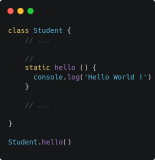

Dans le Javascript, le prototype est un mécanisme qui permet aux objets d'hériter des propriétés d'autres objets.
Syntaxe des classes
Exemple :
Dans l'exemple ci-dessus, on peut voir la création d'un élève à partir de la classe, Student
Création d'un constructeur dans la classe
Création d'une méthode dans la classe
Grâce au système de prototype on peut créer des méthodes qui vont être partagées. Dans notre objet la méthode constructor et setNotes ne sont pas disponibles, mais elles sont disponibles au niveau du prototype. On a donc la possibilité de les appeler sur chaque instance de l'objet, car ils utilisent conjointement le même prototype Student. Et il est donc possible de bénéficier des propriétés au niveau de l'objet.
Par exemple, il est possible de mettre en place des méthodes de vérification dans une classe afin de valider des conditions. Dans le cas suivant, on vérifie qu'un élève à une moyenne suffisamment haute pour passer dans la classe suivante. La méthode moyenne() est donc utilisée dans la classe, puis on fait référence à l'objet (this) pour accéder aux notes de l'élève et mettre en place une condition de vérification.
Setter & Getter :
Les Setter sont appelés automatiquement lorsque l'on définit une valeur (ex: setNotes).
Les Getter permettent d'accéder à une propriété. Par exemple, on souhaite récupérer le nom d'un utilisateur au format suivant : "nom prenom". A la différence des setter, le Getter n'as pas besoin de paramètres, pour afficher les données : on peut directement passer le getter dans le console.log
On peut également définir les méthodes directement sur notre objet :
Si on note Student.name dans la console, on peut noter qu'elle renvoi le résultat. Avec le mot clé STATIC, on peut définir des éléments qui ne sont pas pas dans le prototype des objets initialisés au début ("const damien = new Student('', '')") mais qui seront directement disponibles sur l'objet Student. Cette syntaxe fonctionne également avec une fonction.
De ce fait, le mot clé Static peut servir de constante et être utilisé comme tel :
Comment faire un prototype d'un prototype
Dans le cas ci-dessous, si un élève appartient à l'objet SuperStudent il aura accès a la méthode canPass() de ce prototype, à la place de la méthode du prototype Student. Dans notre exemple, la méthode canPass() de l'objet SuperStudent permet à l'élève de passer en classe supérieure même si ses notes ne le permettent pas. Dans la console, on peut constater que si on appelle nom.canPAss() c'est la méthode du prototype SuperStudent qui est appelé.
Il est également possible d'utiliser des méthodes du prototype parent grâce au mot clé super.
Dans le constructeur, le super peut être utilisé comme fonction avec des paramètres. De ce fait, Super est un peu l'équivalent de l'objet Student.
On peut ensuite utiliser ce qui à été renseigné par l'utilisateur
.png)
On a également la possibilité d'avoir des variables internes.
Il est possible de rendre les variables privées avec "#" qui dépendent du contexte dans lequel elle sont appelées.. C'est assez récents dans le Javascript, les développeurs préfère donc l'utilisation du undescore pour ce genre de variables.